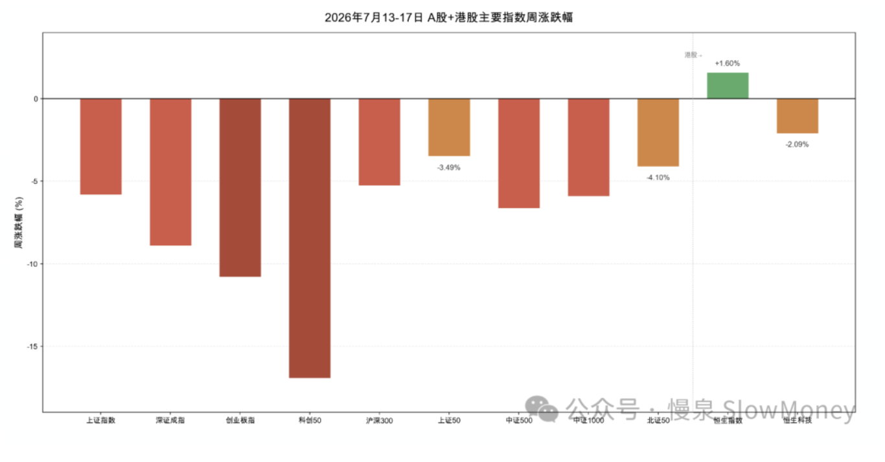
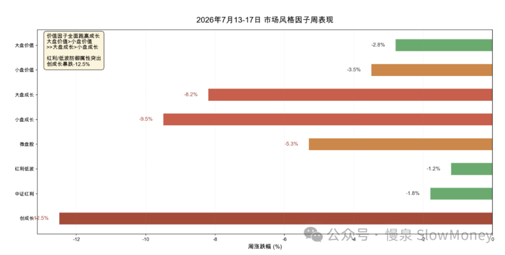

投资备忘20260719-过程还是结果？
2026-07-13 — 2026-07-19 · W29 · 周度备忘（补档）
上周思考结果还是过程，过去的一个月、特别是过去的一周仿佛是在佐证其中的一些感慨。过去的一周市场震荡、持续、大幅下跌，上证回到年内低点，最后一个交易日的暴跌刺激了网络上不少自媒体——能在自己很惨的时候看到别人也那么惨、甚至更惨，也许就是很多所谓"情绪价值"博主存在的意义，对，说的就是"峰哥"……
再看过程和结果？
结果比过程更容易定义
好的结果很容易定义——"好"+"结果"，在投资中你给我足够好的相对或者绝对收益就是好结果；但是好过程呢？什么是"好"、什么是"过程"、什么是"好过程"，不同人的理解差异会比较大。在我看来，简单、可结构化、可自进化的过程是好过程的标准。
好的过程难以保证短期好的结果
假设已经实现好的过程，市场仍然有可能在短期呈现意外的变化，短期可能不奖励过程——耐心有时候是市场最有意思的地方。
好过程并取得好结果，仍有可能在未来投资中摔跟头
假设有好的过程、同时实现了好的结果，如何沉淀、总结这些好的过程，而不是刻舟求剑、成为未来成长的桎梏——这个看起来是现在很多投资人最大的问题。每个人都有"三板斧"，但是一辈子就靠这三板斧：如果这三板斧是世界的第一性原理（那当然可以），但大部分都是基于行业认知、风格博弈，就会产生所谓的英雄迟暮。
投资最难的是对"现实"的时间、空间的判断，对"认知"的幻觉、反身性的判断
分别来看：时间是对择时的判断、空间是对涨跌幅的判断；幻觉其实是刚开始被裹挟学习，产生了认知的幻觉并返佣在"现实"时间空间中；反身性是以为自己懂了之后，认知的反噬。一旦你分不清"现实"和"认知"，就是柏拉图说的被绑手绑脚的囚徒，看洞穴中的幻象。
一旦你分不清"现实"和"认知"，就是柏拉图说的被绑手绑脚的囚徒，看洞穴中的幻象。
本周市场
本周 A 股持续下行，特别是最后一个交易日惨不忍睹，指数回到年内低点。本周沪深 300 下跌 5.81%，恒生科技下跌 2.09%，全部 A 股涨跌幅中位数 -6.0%。全周 481 只个股上涨、4,997 只个股下跌、45 只收平，涨跌比约 1:10；周五单日近 200 只个股跌停、约 900 只跌幅超 9%。
周一延续科技杀跌 → 周二深 V 反弹短暂企稳 → 周三起"高低切换"确立（AI 硬件崩塌，消费/医药崛起）→ 周五三重压力（全球芯片共振下跌 + Kimi K3 开源冲击 + 美伊冲突升级）下演变为全市场恐慌性出清，科创 50 单周暴跌近 17%，创业板指跌超 10%。
| 指数 | 本周涨跌幅 |
|---|---|
| 恒生指数（逆势收涨） | +1.60% |
| 恒生科技 | -2.09% |
| 上证 50 | -3.49% |
| 北证 50 | -4.10% |
| 沪深 300 | -5.81% |
| 上证指数（回到年内低点） | ≈ -5.9% |
| 创业板指 | < -10% |
| 科创 50（周五恐慌性出清） | ≈ -17% |
| 全 A 涨跌幅中位数（涨跌比约 1:10） | -6.0% |

结构上：价值因子全面碾压成长因子。红利低波仅跌 1.2% 成为最抗跌风格，创成长暴跌 12.5%。这是典型的"Risk-Off"防御行情——资金从高位成长向低位价值 + 红利进行系统性迁移，而非全面离场。板块上，电子元件、通信和电池下跌；红利资产逆势上涨（银行、煤炭、电力运营商）；消费上涨。

市场分析：高位科技估值泡沫引发的资金踩踏、资金再平衡、海外冲突。
市场展望
- 逆向参与：仓位提升至 75–80%（Beta）、45%（Macro），积极参与市场，更关注结构性。高位资产用于短线交易并控制在 5–10% 占比以内；红利和 HALO 资产低位布局，不追高，市场崩溃时收集；
- 市场情绪恐慌主导调整：主动减仓、成交额先缩量阴跌再放量暴跌、融资余额 8 连降，都体现出现在处于情绪主导的恐慌阶段——这个速度越快，底部越接近；
- 经济：不温不火，关注外需和月底会议可能的催化，着眼月底的会议适当建立仓位；
- 历史上的风格转换：历史上 2023 年二季度和 2020 年 9–10 月——以 2020 年为例，资金在中报之后从高估值科技、创新药板块中撤出，转向估值低、具备业绩支撑的金融、周期和消费龙头，市场风格完成"高低切换"，这个阶段市场指数在 3200–3400 窄幅震荡，但结构出现顺利的转换。但是大盘不能持续下行，不然很容易走向全面的下跌，这种风险需要防范。
组合备忘
Beta 组合表现大幅跑赢市场（市场指 Wind 全 A 指数），Macro 同样。组合仓位整体上行：周五暴跌阶段增加了持仓，买入的方向是超跌优质个股和 HALO 资产。Beta 策略仓位 76% 附近，利用市场结构性的波动增加交易性持仓，寻找可持续现金流资产；Macro 策略仓位提升至 69%（其中转债 30%），整体保持谨慎。组合的表现主要受到以下因素影响：
- 风格连续第三周对组合正贡献：红利资产、HALO 资产和恒生科技本周表现较好对组合有利，同时科技持仓占比低，一定程度上也减少了大幅的波动——消费和电解铝表现突出；
- 仓位没有顶到很高，交易具备灵活性：当前主要是科技交易型参与，总仓位严格控制；红利资产在低位坚决收集筹码；
- 机器人的仓位承压。
| 类别 | 仓位 |
|---|---|
| Beta 策略（周五暴跌阶段加仓：超跌优质个股 + HALO 资产） | ≈76% |
| Macro 策略权益仓位（含转债 30%，整体保持谨慎） | 69% |
Beta 大幅跑赢市场 · Macro 同样跑赢 · 周度涨幅不再公开播报
操作和思考：主要操作是在周五暴跌的情况下增加了两类资产——超跌优质股：这些公司主业稳定，同时科技 AI 布局明确，资金和风险偏好原因导致的大幅下跌，但即使考虑主业估值和定价已经具备相当的吸引力；HALO 资产：在外部风险持续和美元可能下行的情况下，看好这类资产短期作为 AI 资产的替代品被资金青睐，类似一季度的情况，其持续性可能比消费白酒强。
下一步操作：市场放量暴跌阶段仓位增加，但是近期不高于 82%。方向上，主力继续持有红利资产、HALO 资产；交易产业主题资产；新方向包括月底会议的交易型资产。阶段性仍然维持聚焦结构、灵活交易、控制仓位的策略。结构上继续关注红利资产、HALO 资产和产业主题回落的标的——随着红利资产被市场关注，可持续性强的会吸引大量的资金投票，上涨时不需要过分紧张；暴跌如果造成整体下跌，可以增加布局被错杀的标的。灵活交易超跌优质股和 HALO 资产，一定要灵活交易，作为平衡仓位的重要手段——暴跌阶段买入、反弹坚决卖出，在市场剧烈波动阶段，交易容易创造超额。仓位控制，不激进，用仓位冗余来创造超额收益。
上期钩子的答案：① 负向螺旋——完全兑现：主动减仓、缩量阴跌转放量暴跌、融资余额 8 连降、周五近 200 只跌停，情绪主导的恐慌阶段确认（但原文同时判断"速度越快底部越接近"）；② 2020 式高低切换——确立：周三起 AI 硬件崩塌、消费/医药崛起，红利低波 -1.2% vs 创成长 -12.5%，Risk-Off 迁移而非全面离场；③ 月底会议建仓——顺延（继续着眼月底布局）；④ AI 应用新方向——本期未提，挂起。组合连续第三周跑赢，Beta 加仓至 76%、上限提高到 82%。新钩子：① "恐慌速度越快底部越接近"的逆向判断验证；② 大盘持续下行演变为全面下跌的防范风险；③ 超跌优质股 + HALO 的交易超额；④ 月底会议交易型资产。对账窗口：2026 年 7 月底至 8 月初。